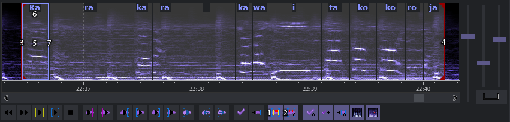

Tworzenie podziału karaoke
Tworzenie podziału karaoke

- Załączanie / Wyłączanie tworzenia podziału karaoke (przy włączeniu podziału powiększa wykres w poziomie o 20%).
- Załączanie / Wyłączanie automatycznego dzielenia sylab.
- Znacznik czasu początkowego.
- Znacznik czasu końcowego.
- Aktywna sylaba zaznaczona jest czerwoną obwódką.
- Tekst sylaby.
- Linia podziału sylab.
W przypadku tekstu japońskiego podział jest bardzo ułatwiony, bo włączając automatyczne dzielenie sylab (2) dostajemy cały tekst podzielony na sylaby, wystarczy tylko przeciągnąć żółte linie (7), przytrzymując lewy przycisk myszy tak, by dopasować tekst do tego co słychać. Możemy też włączyć opcję przestawiania aktywnej sylaby kliknięciem, przyspieszy pracę przy podziale.
W przypadku tekstu angielskiego albo w jeszcze innym języku należy wyłączyć automatyczny podział i podzielić samemu.
Sylaby dzielimy, najeżdżając myszą na żółty tekst, wtedy pojawia się czerwona linia pokazująca miejsce, w którym zostanie on podzielony, wystarczy wtedy kliknąć lewym przyciskiem, by dokonać podziału.
Kasowanie podziału można zrobić po najechaniu myszką na żółtą linię i w momencie, gdy pojawiają się dwie strzałki kliknąć środkowy przycisk myszy.
Odsłuchiwanie sylab najlepiej robić, używając skrótów klawiszowych, strzałka w lewo - poprzednia sylaba, strzałka w dół - aktywna sylaba, strzałka w prawo - następna sylaba. Można też kliknąć środkowym przyciskiem myszy w daną sylabę.
Zmiana czasów sylab można normalnie przeciągać je myszą, albo kliknąć lewym w aktywną sylabę by przestawić jej koniec, bądź kliknąć w sylabę przed aktywną, by przestawić początek.
Prawy przycisk myszy przy przestawianiu sylab działa podobnie jak lewy z taką różnicą, że przesuwa też następne sylaby tak by w przypadku gdy sylaby uciekły za bardzo na prawo bądź nachodzą nam wręcz na aktywna sylabę łatwo to skorygować nie przesuwając wszystkich następnych sylab ręcznie.
Można także przesuwać czas początkowy lewym przyciskiem w przypadku gdy trzeba go skorygować, co nie zmieni nam ustawionego już podziału sylab, prawym przyciskiem przesuwa razem z sylabami.
Czas końcowy jest automatycznie zlepiony z linią ostatniej sylaby, aby przez pomyłkę nie wyjechać linią ostatniej sylaby poza koniec linijki.
Dobrą opcją w tym przypadku jest automatyczne zapisywanie zmian (przycisk na prawo od nr 5) co zapewni, że przy przejściu do następnej linii przy odsłuchiwaniu, korzystając z klawiatury nie skasujemy sobie wszystkich zmian. W przypadku odsłuchiwania myszą, nie jest to wymagane bo i tak musimy kliknąć zatwierdzenie bądź enter, by przejść do następnej linii.
Ten temat zawarłem w tutorialu.
Created with the Personal Edition of HelpNDoc: Easily create HTML Help documents